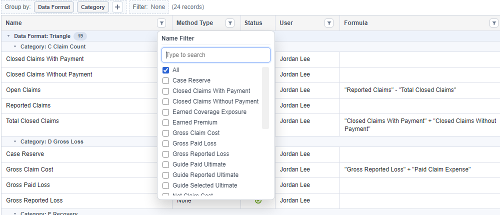
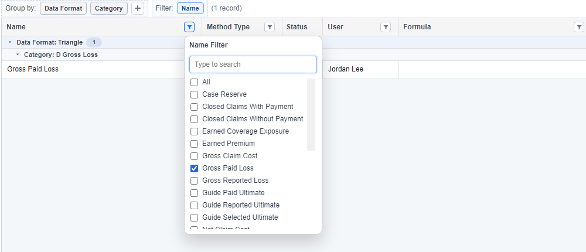
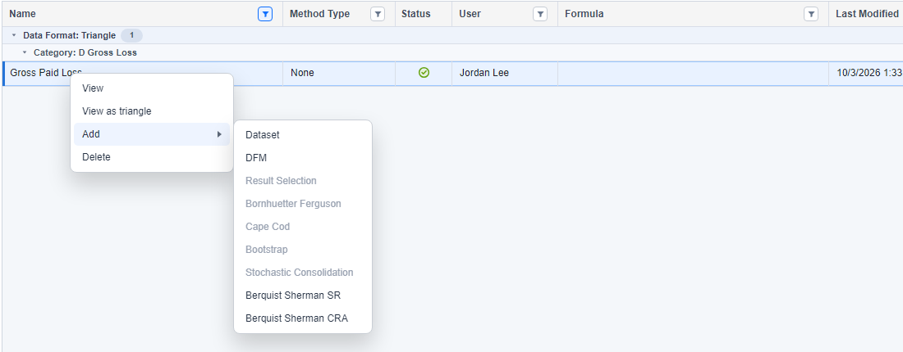
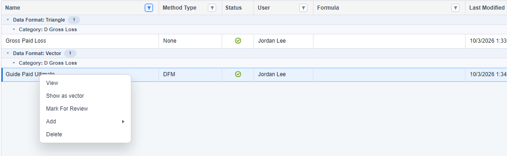

Project Page
Find your data and open a method
Use the segment tree to choose the data you are working on, then use the dataset table to inspect inputs and open or create methods.
Open the Project and Segment
- In the app's Project Explorer, expand Test/Demos.
- Double-click Monthly_Insurance_Dataset to open its Project Page page.
- In the segment tree, expand Commercial Auto → All States → CH02, then select Comprehensive.
- Check the dataset table for the selected segment. Each row represents a dataset instance; its data format and method type help you choose the correct action.

Find Gross Paid Loss
- Click the funnel control in the Name column header.
- Choose Gross Paid Loss to show the matching dataset.
- To return to the full table, reopen the Name filter and choose All.


Inspect the Input Triangle
- Double-click the Gross Paid Loss row to open the dataset.
- On its Data tab, check that you are viewing cumulative values with Origin Length and Development Length both set to 12.
- Review the origin years 2016–2025. At the May 2026 valuation, the latest ages run from 5 months for the newest origin to 113 months for the oldest.
- Close or minimize the dataset window to return to Project Page.

Create a DFM from the Triangle
- In Project Page, select the Gross Paid Loss triangle row whose Method Type is None.
- Right-click the row, point to Add, then choose DFM.
- In the new method, use My Paid DFM as the Name and Guide Paid Ultimate as the Output Type. Continue with the DFM Details walkthrough.

Open the Saved Method or Its Vector
- Clear the Name filter with All, or filter for Guide Paid Ultimate.
- Find the Guide Paid Ultimate row with data format Vector and Method Type DFM.
- Double-click this row to reopen the DFM method and review its selections.
- To inspect its output as a dataset instead, right-click the same row and choose Show as vector.

Check Status and Refresh the Table
A method output marked Review Needed needs your attention. Open its method, inspect the inputs and selections, and save the reviewed method. Refreshing the table alone does not acknowledge the review.
The demo also includes Guide Reported Ultimate and Guide Selected Ultimate. Use the Result Selection walkthrough to compare the paid and reported DFM outputs.
If data or methods changed outside the current page, use Refresh Table to reload the inventory. If a row still seems missing, check the selected segment and clear any active column filters.